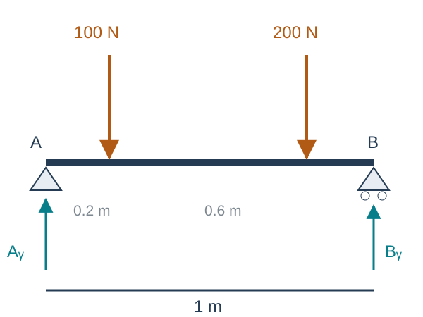
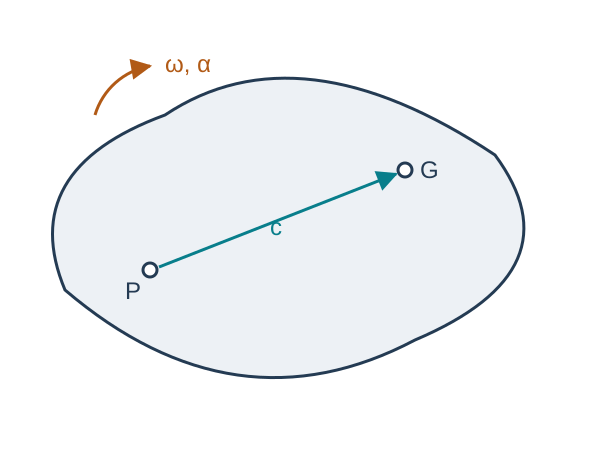
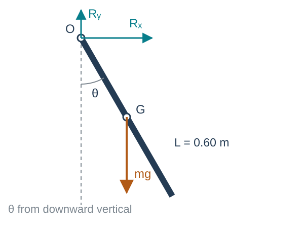

Formulation of Equations of Motion
Kinematics and Machine Dynamics · Chapter 10
Chapter overview
- Static equilibrium and free-body diagrams
- Linear and angular momentum balances
- Newton–Euler equations at the mass center
- Equations about another body-fixed point
- Planar motion and mechanism force analysis
Goal: turn known loads into motion, or known motion into required loads.
Assumptions of this chapter
Each link is rigid and has constant mass. The reference frame used to measure acceleration is inertial.
Joints are ideal and frictionless unless a load is explicitly included. Contact friction and impact enter in Chapter 11.
A static approximation is appropriate only when inertial loads are small relative to the loads of interest.
Rigid-body force analysis predicts joint reactions and driving torques. Stress and deformation require a separate structural model.
Free-body diagrams determine the equations
Isolate one body and show all loads exerted on it by its surroundings:
- Applied forces and actuator couples.
- Weight acting at the mass center G.
- Joint forces and any moments the joint can transmit.
An ideal planar pin transmits two force components and no couple. A frictionless planar prismatic joint can transmit a normal force and a couple.
Action–reaction pairs act on different bodies.
Static equilibrium
For a rigid body at rest,
\boxed{\sum F=0,\qquad \sum M_O=0.}
In three dimensions these are six scalar balance equations.
For planar loading in the xy plane,
\boxed{\sum F_x=0,\qquad\sum F_y=0,\qquad\sum M_{O,z}=0.}
With zero resultant, the moment balance holds about every point.
Worked example: a supported beam

Neglect the beam’s weight. The span is 1 m.
\sum M_A=0:\quad B_y(1)-100(0.2)-200(0.8)=0.
B_y=180\ \mathrm N, A_y=300-180=120\ \mathrm N, A_x=0.
When inertia becomes significant
A mass center at offset e from a fixed spin axis has normal acceleration e\omega^2.
The corresponding force scale is
F_{\mathrm{inertia}}=me\omega^2.
For m=2 kg, e=1 mm, and \omega=100 rad/s,
F_{\mathrm{inertia}}=20\ \mathrm N.
Doubling the speed gives 80 N. A small eccentricity can matter at high speed.
Linear momentum balance
For constant total mass m, the linear momentum is p=mv_G.
\boxed{\sum F=\left(\frac{dp}{dt}\right)_A=ma_G.}
A is an inertial frame. The resultant includes all external forces, wherever they act.
There is no requirement that every applied force pass through G.
Angular momentum about the mass center
The angular momentum about G is
H_G=\int_B r\times(v-v_G)\,dm=I_G\omega.
The angular momentum balance is
\boxed{\sum M_G=\left(\frac{dH_G}{dt}\right)_A.}
The mass center may accelerate. This balance holds about G without a moving-point correction.
Moments about other moving points need more care.
The rotating-basis derivative
In a body basis B, I_G^B is constant. The transport theorem gives
\left(\frac{dH_G}{dt}\right)_A =\left(\frac{dH_G}{dt}\right)_B+\omega\times H_G.
Since \omega\times\omega=0, the body components of angular acceleration satisfy \alpha_B=\dot\omega_B.
\boxed{M_G^B=I_G^B\dot\omega_B+\omega_B\times(I_G^B\omega_B).}
Every vector component and inertia entry in this equation uses the same basis.
Euler equations in principal axes
For I_G^B=\operatorname{diag}(I_1,I_2,I_3),
M_1=I_1\dot\omega_1+(I_3-I_2)\omega_2\omega_3, M_2=I_2\dot\omega_2+(I_1-I_3)\omega_3\omega_1, M_3=I_3\dot\omega_3+(I_2-I_1)\omega_1\omega_2.
The cross terms describe how angular momentum changes direction as the body rotates.
For rotation about a principal axis, \omega and I_G\omega are parallel and the cross term vanishes.
Worked example: a gyroscopic torque
At an instant, body coordinates give
I_G=\operatorname{diag}(0.2,0.3,0.4)\ \mathrm{kg\,m^2},\quad \omega=\begin{bmatrix}1\\2\\3\end{bmatrix}\ \mathrm{rad/s},\quad\alpha=0.
Then I_G\omega=(0.2,0.6,1.2)^T kg·m²/s and
\boxed{M_G=\omega\times I_G\omega= \begin{bmatrix}0.6\\-0.6\\0.2\end{bmatrix}\ \mathrm{N\,m}.}
Zero angular acceleration can still require a torque when angular momentum is not parallel to angular velocity.
Newton–Euler equations at the mass center
Collect translational and rotational balances:
\boxed{\begin{bmatrix}F\\M_G\end{bmatrix} =\begin{bmatrix}m\mathbf1&0\\0&I_G\end{bmatrix} \begin{bmatrix}a_G\\\alpha\end{bmatrix} +\begin{bmatrix}0\\\omega\times I_G\omega\end{bmatrix}.}
F is the external resultant, M_G its total moment about G, and a_G the inertial acceleration of G.
All components use one basis. In a body basis, a_G is the inertial acceleration expressed in that basis, not simply \dot v_G^B.
Moving the reference point to the body

Let P be fixed in the rigid body and c=\overrightarrow{PG}.
From Chapter 7,
a_G=a_P+\alpha\times c+\omega\times(\omega\times c).
From Chapter 9,
M_P=M_G+c\times F.
These identities give the equations about P.
Translation referred to a body-fixed point
Substitute a_G into F=ma_G:
F=ma_P+m\alpha\times c+m\omega\times(\omega\times c).
Using \widehat c\,\alpha=c\times\alpha,
\boxed{F=ma_P-m\widehat c\,\alpha+m\widehat\omega^{\,2}c.}
The reference point’s acceleration and angular acceleration are coupled whenever c\ne0.
Rotation referred to a body-fixed point
Start with M_P=I_G\alpha+\omega\times I_G\omega+c\times F.
Define the shifted inertia
I_P=I_G-m\widehat c^{\,2}.
After substitution and collection,
\boxed{M_P=m\widehat c\,a_P+I_P\alpha+\omega\times(I_P\omega).}
The term mc\times a_P is essential if P accelerates.
The coupled six-dimensional equation
\boxed{\begin{bmatrix}F\\M_P\end{bmatrix} =\begin{bmatrix}m\mathbf1&-m\widehat c\\m\widehat c&I_P\end{bmatrix} \begin{bmatrix}a_P\\\alpha\end{bmatrix} +\begin{bmatrix}m\widehat\omega^{\,2}c\\\widehat\omega I_P\omega\end{bmatrix}.}
The matrix is symmetric because \widehat c^T=-\widehat c.
At P=G, c=0 and the equations reduce to the mass-center form.
F remains the sum of all external forces. M_P is the moment about P.
Planar motion
For motion in the xy plane, \omega=\omega e_z and \alpha=\alpha e_z.
\boxed{\sum F_x=ma_{G,x},\quad\sum F_y=ma_{G,y},\quad \sum M_{G,z}=I_{G,zz}\alpha.}
The z component of \omega\times I_G\omega vanishes.
The whole gyroscopic vector need not vanish unless z is a principal direction. Out-of-plane support moments may still be needed to enforce planar motion.
Planar moments about another point
For a body-fixed P,
\boxed{M_{P,z}=I_{P,zz}\alpha+m(c\times a_P)_z.}
Two useful choices are:
- P=G: the offset c is zero.
- An inertially fixed pivot: a_P=0.
For either choice the moment equation simplifies. For an accelerating joint, the correction generally remains.
Worked example: a falling rigid rod

Uniform rod: m=2 kg and L=0.60 m. Let l=L/2=0.30 m.
At release, \theta=30^\circ and \dot\theta=0. The pivot is frictionless and fixed.
I_O=\frac{mL^2}{3}=0.24\ \mathrm{kg\,m^2}.
Find the angular acceleration and pin reactions.
Falling rod: angular acceleration
Taking moments about the fixed pivot removes its reaction forces:
-mgl\sin\theta=I_O\ddot\theta.
At release,
\boxed{\ddot\theta=-\frac{2(9.81)(0.30)\sin30^\circ}{0.24} =-12.2625\ \mathrm{rad/s^2}.}
The negative sign means acceleration toward the downward position.
To hold the rod statically at this angle, the actuator would instead supply +2.943 N·m.
Falling rod: pin reactions
With r_{OG}=l(\sin\theta\,e_x-\cos\theta\,e_y) and \omega=0 at release,
a_G=l\ddot\theta(\cos\theta\,e_x+\sin\theta\,e_y) \approx-3.186e_x-1.839e_y\ \mathrm{m/s^2}.
The force balances are
R_x=ma_{G,x},\qquad R_y-mg=ma_{G,y}.
\boxed{R_x\approx-6.372\ \mathrm N,\qquad R_y\approx15.941\ \mathrm N.}
The vertical reaction is smaller than the weight because G accelerates downward.
A driven physical pendulum
For a fixed pivot, mass-center distance l, and actuator torque \tau,
\boxed{I_O\ddot\theta+mgl\sin\theta=\tau.}
Forward dynamics: given \theta,\dot\theta,\tau, compute \ddot\theta.
Inverse dynamics: given a desired \theta(t), compute
\tau(t)=I_O\ddot\theta(t)+mgl\sin\theta(t).
This single equation includes static holding torque and dynamic acceleration torque.
An energy check on the pendulum equation
For V=mgl(1-\cos\theta),
E=\frac12I_O\dot\theta^2+V.
Differentiate and use the equation of motion:
\dot E=\dot\theta\left(I_O\ddot\theta+mgl\sin\theta\right) =\boxed{\tau\dot\theta}.
With no actuator and no friction, mechanical energy stays constant. A sign error in gravity would fail this check.
A mechanism needs a balance for each link
For a planar link i,
\sum F_i=m_i a_{G_i},\qquad\sum M_{G_i,z}=I_{G_i,zz}\alpha_i.
A pin force exerted on link 1 appears with the opposite sign on link 2. These forces cancel only when the entire assembly is considered.
Use Chapters 6–7 to obtain the motion of every mass center and each link’s angular acceleration before solving an inverse force problem.
Solving an inverse force problem
At a known mechanism configuration and motion:
- Draw each link’s free-body diagram.
- Compute a_{G_i} and \alpha_i from the kinematics.
- Write the force and moment equations with shared joint-force unknowns.
- Assemble A(q)x=b(q,\dot q,\ddot q) and solve for reactions and input torques.
A singular or poorly conditioned matrix can signal a special configuration, redundant constraints, or missing load information.
Generalized-coordinate equations
After eliminating ideal constraint reactions, the same dynamics can be written in independent coordinates:
\boxed{M(q)\ddot q+C(q,\dot q)\dot q+\nabla V(q)=Q.}
The kinetic energy is T=\tfrac12\dot q^TM(q)\dot q.
For the physical pendulum, M=I_O, C=0, and Q=\tau.
Chapter 11 adds unilateral contact forces and velocity jumps to this framework.
References and next chapter
Primary: Aykut C. Satici, Kinematics and Machine Dynamics, Fall 2020 compiled notes, Chapter 10, pp. 63–67.
Supporting: original course Lecture06, equations-of-motion slides. Chapters 7–9 supply the acceleration, inertia, and moment-transfer identities.
Next: Chapter 11, Rigid-Body Dynamics with Friction and Impact

← Course Home · Kinematics and Machine Dynamics · Chapter 10